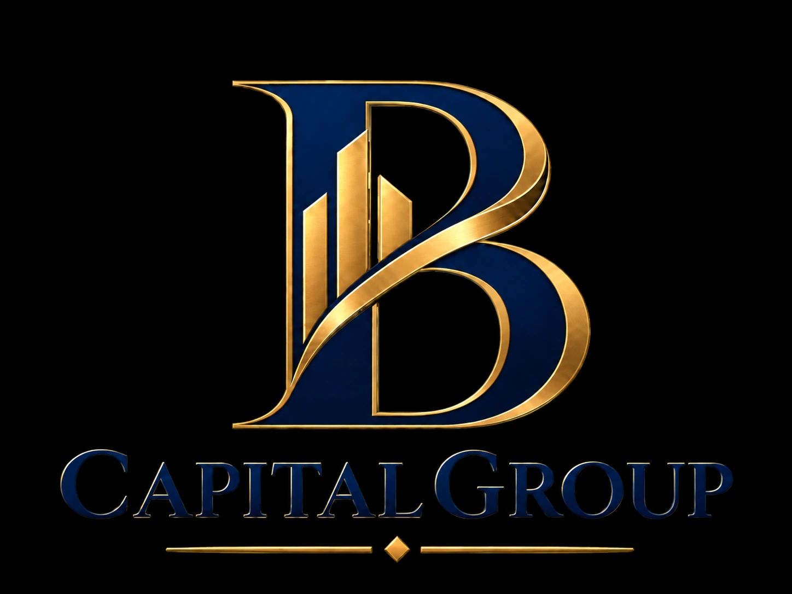
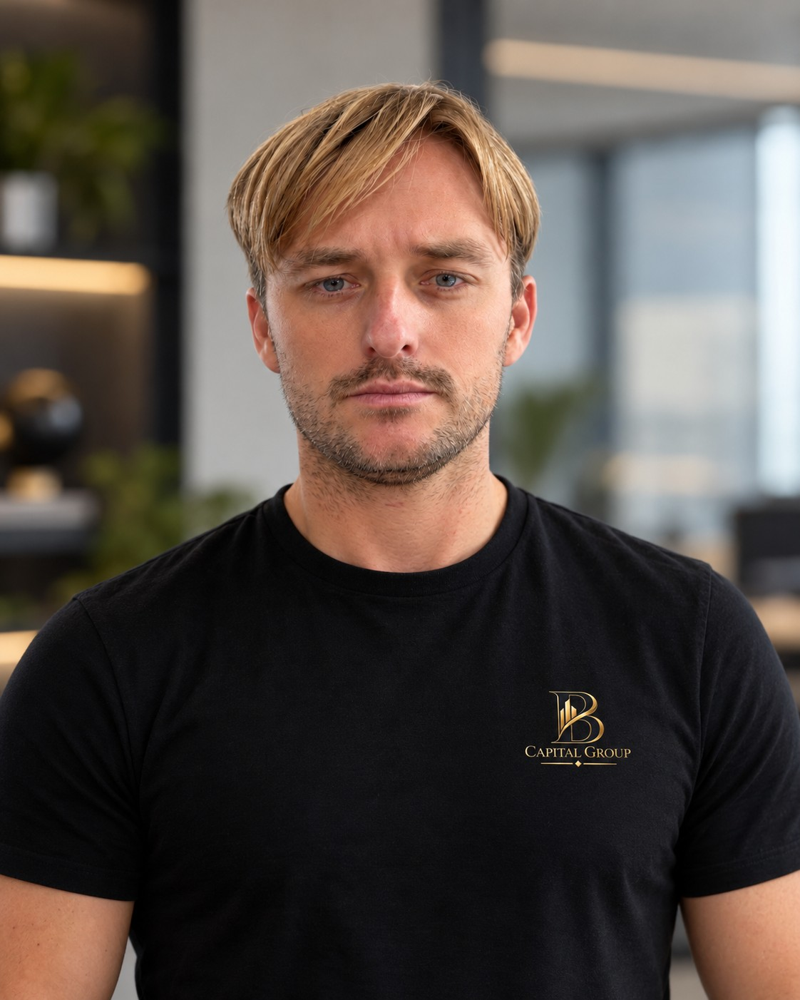

01 / 03
Digital assets
Analisi dei mercati crypto, delle tecnologie blockchain e delle opportunità offerte dall'evoluzione degli asset digitali.
RICERCA & MERCATIStrategie di investimento orientate al lungo periodo. Un approccio personale ai patrimoni privati, con una conoscenza dei mercati delle criptovalute maturata dal 2017.

Crediamo in scelte fondate su analisi, consapevolezza e una visione chiara del capitale.
I mercati digitali offrono opportunità, ma comportano anche volatilità e rischi significativi. Per questo ogni decisione richiede metodo, attenzione all'esposizione e capacità di guardare oltre il breve periodo.
Il nostro approccioUna lettura del mercato che unisce conoscenza dell'ecosistema crypto, attenzione al patrimonio e visione strategica.
Analisi dei mercati crypto, delle tecnologie blockchain e delle opportunità offerte dall'evoluzione degli asset digitali.
RICERCA & MERCATIUna prospettiva focalizzata sulle esigenze del capitale privato, sulla selezione delle strategie e sull'equilibrio tra obiettivi e rischio.
STRATEGIA & CAPITALEDisciplina operativa, attenzione alla volatilità e valutazione costante delle possibili perdite: il rischio è parte integrante di ogni scelta.
METODO & RESPONSABILITÀSviluppiamo strumenti per rendere più chiaro e accessibile il monitoraggio degli investimenti digitali.
Piattaforma dedicata al monitoraggio dell'andamento di Injective (INJ): prezzo di mercato, valore dei wallet, staking e reward, attraverso un'interfaccia dinamica con dati aggiornati.
Una panoramica aggregata dei 5 wallet della INJ Node Treasury. Gli indirizzi non sono visualizzati nel sito.
I valori comprendono soltanto INJ disponibili, in staking, in sblocco e reward non riscossi. Il P/L 24h è una stima dell'effetto della variazione di prezzo sui saldi correnti: non rappresenta il profitto effettivamente realizzato e non include flussi o altri asset. Se le fonti dati non sono disponibili, le cifre non vengono simulate.

FOUNDER & CEO
31 anni, classe 1995, una passione per gli investimenti e un interesse concreto per il mondo crypto dal 2017.
Ho iniziato a investire nelle criptovalute nel 2017, sviluppando negli anni un approccio personale all'analisi dei mercati digitali. Con B Capital Group metto questa esperienza al centro di una visione dedicata ai patrimoni privati.
Il mio obiettivo è perseguire risultati positivi nel tempo, lavorando con disciplina, attenzione al rischio e consapevolezza che nessun investimento può garantire un profitto.
Il profitto è un obiettivo.
Il metodo è ciò che ci guida.
Ricerca, pazienza e controllo del rischio sono la base di ogni decisione. Nessuna promessa di guadagno: solo la volontà di costruire strategie fondate su un processo consapevole.
Per informazioni su B Capital Group e per approfondire la nostra visione, utilizza i canali di contatto ufficiali quando saranno attivati.